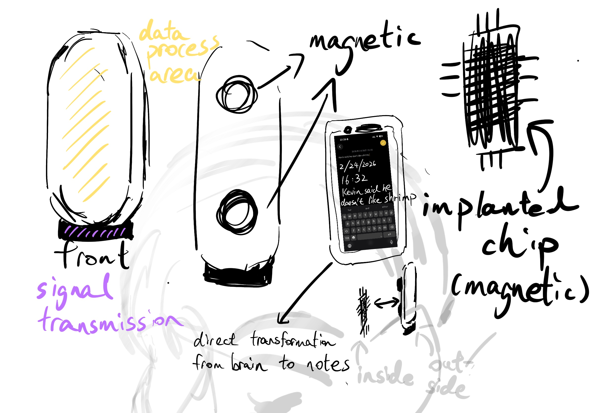

Singular Synaptic Bridge
Singular Synaptic Bridge, or SSB, is a speculative neural interface device that captures short-term memory traces and converts them into brief text records. Designed as a wearable memory tool, it works between the brain and a personal digital archive, allowing moments, thoughts, and impressions to be saved before they disappear.

Sketch
Click to view the design statement